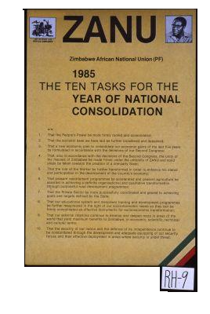

This poster is from around 1985, according to the Hoover Institution Archives. It is from Zimbabwe, specifically from the Zimbabwe African National Union, or ZANU. The ZANU was a socialist group that was lead by Robert Mugabe, who was later criticized for his authoritarian tendencies. This poster centers the goals of the ZANU with robert Mugabe, evidenced by the inclusion of his photo. This centers the viewer’s focus, and makes Mugabe and the ZANU the same. This therefore ignores the experiences of other socialists or those with a more nuanced view. This forms a narrative that socialism is an oppressive, authoritarian force. It can then be used in policy to discredit domestic government intervention and push for free-market ideals.
Back